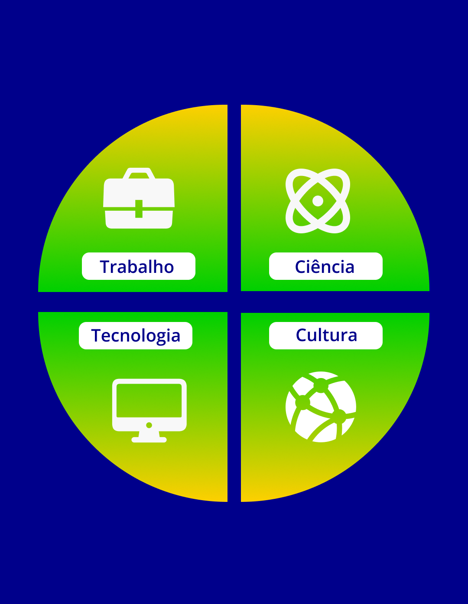
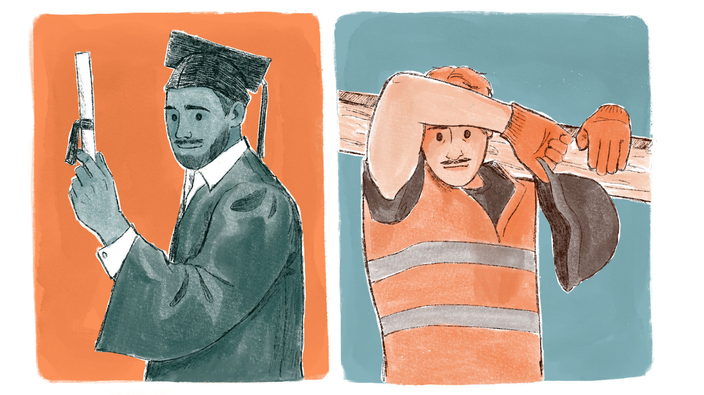

Você sabe o que é o ensino integrado?
Agora, vamos aprofundar o que é ensino integrado. Frigotto e Araújo assinalam que, para além da educação profissional de nível médio, o ensino integrado
[...] é uma proposição pedagógica que se compromete com a utopia de uma formação inteira, que não se satisfaz com a socialização de fragmentos da cultura sistematizada e que compreende como direito de todos o acesso a um processo formativo, inclusive escolar, que promova o desenvolvimento de suas amplas faculdades físicas e intelectuais.
De forma a complementar, Ciavatta (2010) afirma que integrar vai “[...] no sentido de completude, de compreensão das partes no seu todo ou da unidade no diverso, de tratar a educação [...] nas múltiplas mediações históricas que concretizam os processos educativos” (p.84).
A formação integral pressupõe o desenvolvimento integrado dos sujeitos mediante uma proposta de ensino que preconiza a ampliação cognitiva, a partir da correlação das diversas dimensões estruturantes da vida: trabalho, ciência, tecnologia e cultura.

Título: As correlações entre as estruturas de vida do indivíduo
Fonte: Prosa (2024e).
A importância dessa perspectiva está na superação da fragmentação que, historicamente, foi imposta ao ser humano pela divisão social do trabalho, pela cisão da sociedade de classes e todas as contradições promovidas pelo modo de produção capitalista.
Retomamos, aqui, a visão dual ou fragmentada apresentada no capítulo I, que é a expressão da totalidade social segmentada desde o Brasil Colônia e que resulta das relações materiais, sociais e culturais de produção.
Vamos iniciar essa reflexão, questão que surge ainda no Império. Segundo Salm (1986, p. 74), o problema que assalta o pensamento conservador é: “o que fazer com os pobres? E a resposta sempre foi: ensinar um ofício”.
A receita educacional remete, hoje, à proposta de profissionalização sob a perspectiva economicista da educação e da pedagogia tecnicista, atualizada à medida que se alteram as demandas de formação da força de trabalho feitas pelo sistema produtivo e na sociedade de classes brasileira.
Ou seja, isso quer dizer que a preparação para o trabalho é reduzida ao aspecto puramente operacional, simplificado e esvaziado dos conhecimentos de ordem reflexiva e emancipatória. É, em síntese, a formação da classe trabalhadora subordinada aos interesses da classe dos proprietários dos meios de produção, voltada ao trabalho manual, ao praticismo, ao trabalho simples.
Para compreender melhor a perspectiva economicista da educação, retornamos no tempo.
É a partir da década de 1940, com as leis orgânicas (Reforma Capanema) criadas para organizar a educação nacional, que o dualismo da educação (segundo a orientação de classe) se afirma com seu caráter estrutural. Além disso, os ensinos profissionais são concebidos como subsistemas e à parte do ensino com caráter propedêutico, ou seja, preparatório à continuidade dos estudos.
Das leis orgânicas do ensino decorre, então, a seguinte segmentação: de um lado, uma vertente dirigida à formação propedêutica das elites dirigentes e à continuidade dos seus estudos nas universidades; de outro, o ensino profissional, destinado aos segmentos sociais populares e menos favorecidos.
É nessa estrutura colonial que as raízes do dualismo das classes sociais e a desigualdade de acesso aos bens e serviços socialmente produzidos se fixam no tecido social. Um dos aspectos que fundamentam essa estrutura é o escravismo e a discriminação do trabalho manual.
Para saber mais, sugere-se CIAVATTA, Maria. A formação integrada: a escola e o trabalho como lugares de memória e de identidade.

Título: Formação propedêutica das elites X ensino profissional
Fonte: Prosa (2024g).
A Reforma Capanema se perpetuou por 20 anos e contribuiu para consolidar o dualismo na educação em consonância com a estrutura social brasileira.
A Reforma Capanema (referência a Gustavo Capanema, então Ministro da Educação e Saúde, 1934-1945, no governo de Getúlio Vargas), sob o nome de Leis Orgânicas do Ensino, que compreendem um conjunto de decretos-lei, estruturou o ensino industrial, reformou o ensino comercial e criou o Serviço Nacional de Aprendizagem Industrial – SENAI, como também trouxe mudanças no ensino secundário.
Foram publicados os seguintes decretos-lei:
- Decreto-lei n. 4.073, de 30 de janeiro de 1942, que organizou o ensino industrial;
- Decreto-lei n. 4.048, de 22 de janeiro de 1942, que instituiu o SENAI;
- Decreto-lei n. 4.244 de 9 de abril de 1942, que organizou o ensino secundário em dois ciclos: o ginasial, com quatro anos, e o colegial, com três anos;
- Decreto-lei n. 6.141, de 28 de dezembro de 1943, que reformou o ensino comercial.
O conjunto desses decretos teve, para a educação profissional, a determinação expressa da herança dualista, quando determinou que o ensino secundário e o ensino normal tinham como objetivo “formar as elites condutoras do país”, enquanto ao ensino profissional o objetivo era oferecer “formação adequada aos filhos dos operários, aos desvalidos da sorte e aos menos afortunados, aqueles que necessitam ingressar precocemente na força de trabalho”. Observa-se que a Reforma Capanema, por meio das suas diretrizes, promoveu a organização e a padronização da dualidade do aparelho escolar.
O processo de industrialização no Brasil, ainda que desenvolvido de forma lenta, exigia uma nova formação de trabalhadores voltada à indústria: uma aprendizagem que introduzisse a adaptação do trabalhador às necessidades e ao ritmo da máquina e de maneira a disciplinar a força de trabalho. No entanto, a subdivisão e a fragmentação do trabalho promoveram a perpetuação do domínio do capital e a ampliação da exploração do trabalhador (extração da mais-valia), considerando o aumento da intensidade do trabalho.
Para uma discussão mais aprofundada sobre a Reforma Capanema, você pode ler o artigo Organização e estrutura da educação profissional no Brasil: da Reforma Capanema às leis de equivalência, das professoras Olívia Medeiros, Eva Lídia, Juliana Barbosa e Francinaide Nascimento.
Em 1961, foi promulgada a Lei de Diretrizes e Bases da Educação Nacional (LDB), Lei nº 4.024 de 20 de dezembro de 1961. Ela contemplou a educação como um “dever e direito de todos” (Art. 2) e a equivalência dos cursos de nível médio (Art. 51). No entanto, o que predominou foi a omissão em face da realidade educacional e social desigual, traduzida também pela falta de escolas, professores e materiais.
A obrigatoriedade de oferta de educação básica levou à institucionalização (pelo menos formal) do princípio da igualdade de oportunidades. Disseminou-se, também, a expectativa de mobilidade e ascensão social das camadas médias e populares pela via da educação; entretanto, a submissão aos padrões discricionários de seleção escolar as induziu a assumir a culpa pela sua própria falta de êxito. Além disso, as aspirações de conquistar um título acadêmico se esbarram na necessidade de trabalhar para o sustento próprio ou da família, levando os setores populares a buscarem cursos de nível médio profissionalizantes, “[...] na maioria, ministrados à noite e menos exigentes quanto ao ginásio e ao colégio” (Freitag, 1984, p.67).
O setor privado, acolhido favoravelmente pela Lei nº 4024 de 20 de dezembro de 1961 e motivado a explorar a educação como negócio, apoderou-se dos cursos profissionalizantes que exigiam pouco investimento de infraestrutura, como também da contratação de professores não habilitados e pouco qualificados.
Por conta das demandas do público-alvo (trabalhadores), ansioso por ascender ao ensino universitário, e das brechas oferecidas pela Lei nº 4024 de 20 de dezembro de 1961, os cursos profissionalizantes, que deveriam fornecer qualificações médias para o mercado de trabalho, foram gradativamente se aproximando da formação propedêutica.
Assim, o setor produtivo denuncia a inadequação do ensino profissionalizante médio, o qual, por sua vez, passa a exigir a responsabilidade das empresas pela qualificação no próprio ambiente de trabalho. Esse impasse leva à reivindicação de maior participação do sistema educacional na capacitação profissional, tanto para contribuir com o aumento da produtividade econômica quanto para assumir os custos da qualificação da força de trabalho.
A partir de 1964, sob as rédeas do regime militar, o governo brasileiro passou a ajustar o sistema educacional de maneira que fossem cumpridas, da forma mais conveniente ao capital, as funções de reprodução e manutenção das relações de produção dominantes. A educação, sob a égide da Teoria do Capital Humano, que postula a educação principalmente como fator de desenvolvimento econômico, em uma perspectiva economicista que passou a identificar a educação como um ativo produtor de lucro social e individual. Com tais fundamentos economicistas, o Estado brasileiro passou a bancar os gastos realizados com a qualificação dos trabalhadores e, consequentemente, a atender às reivindicações dos setores privados nacional e multinacional.